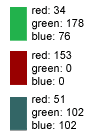
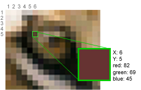

How Does a Computer Store Images?
In order to understand how to manipulate and create pictures on a computer, you must understand how a computer stores images. Use this help page as a reference guide. For detailed information, or if you have not done so already, be sure to read the Pictures section of your textbook.
Pixels
A pixel is literally a picture element. Pixels are the building blocks that computers use to build pictures. Everything you see on your screen is made up of tiny little dots of color--pixels. Each pixel has a solid color, but because they are so small, when viewed together the pixels appear to make up pictures with continuous color.
If you look closely, you can distinguish individual pixels in a JPG image.
RGB (Red Green Blue)
You may already know that any color can be created by combining red, green, and blue. In fact, this is how the computer encodes the color of each pixel on the screen. Each pixel is associated with a red value, a green value, and a blue value. The ranges for each value are 0-255.
The functions getRed(pixel), getGreen(pixel), and getBlue(pixel) return the value of each for a pixel. The functions setRed(pixel), setGreen(pixel), and setBlue(pixel) allow you to set the value of each to something new for a pixel. See Picture Functions in JES for more details and functions.

RGB values:

Pictures as Matrices of Pixels
Computers create images out of pixels not only by assigning them colors, but by arranging them in matrices. A matrix has two dimensions, so each pixel in a picture has two coordinates that define its position in the matrix. For pixels, the first coordinate is called x and represents a pixel's position from the left side of an image. The second coordinate is called y and represents a pixel's position from the top of the image. (See the help section on data structures for more help with matrices.)
The image below represents an extreme close-up of the eye of the lion pictured above. The pixel at coordinates (5,4) is highlighted and magnified. It's RGB value is also displayed.
The functions getX(pixel) and getY(pixel) return the coordinates of a pixel. See Picture Functions in JES for more details.
